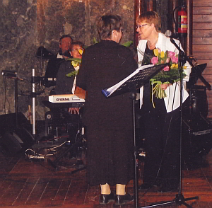
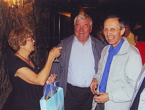

A tymczasem w Cameracie...
.
2011-04-27
Wieliczka i Saint-Andre, to zaprzyjaźnione miasta partnerskie.Chóry z obu miast również są zaprzyjaźnione i zapraszają się na swoje koncerty.
Tak i tym razem członkowie Cameraty zostali zaproszeni na występ, który odbył się w Kopalni Soli w Wieliczce.
Tytuł występu „Z piosenką francuską z Saint-Andre do Wieliczki”.

Po pięknym występie pani dyrygent francuskiego chóru otrzymała kwiaty i podziękowania od członków Cameraty.

29.IV. odbyła się wspaniała pożegnalna kolacja. Wszyscy świetnie się bawili.

© Stowarzyszenie Muzyczne Chór Camerata Wieliczka